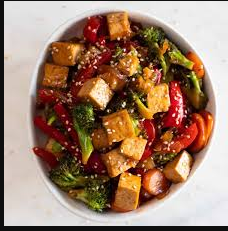

Stirfry

Description
Here we have a recipe for a (relatively) healthy stirfry dish. It's a simple dish, easy to throw together, and not too time consuming.
Perfect if you are in the mood for something healthy, with plenty of yummy veggies.
In the next section, we go over the ingredients you'll need.
Ingredients
- A block of extra firm tofu
- Veggie or canola oil
- 1 Yellow or white onion
- 1 Bellpepper
- A head of broccoli
- A cup of shredded red cabbage
- Carrots
- 4 cloves of garlic
- A tablespoon of ginger
- Red pepper flakes
- Soysauce
- Seasame oil
- Optional: A cup of white rice
We believe in variety, so feel free to swap out the veggies with something you prefer! Can be served on a bed of white rice, or as is.
Steps
- Cut the tofu into 1 to 2 inch cubes. Set aside.
- Dice all veggies. Dice garlic and ginger separately and set aside.
- Heat up your wok, or saucepan, on medium to high heat.
- Once pan is hot, pour in a tablespoon of veggie oil.
- Add tofu to the pan. Stir and cook until all sides are a light brown, or tannish color.
- Once golden, remove tofu from pan.
- Add another tablespoon of vegetable oil to the pan/wok.
- Add vegetables to the pan. Sautee, stirring as needed.
- Once vegetables begin to soften, after three minutes or so, add in the diced garlic and ginger.
- After two to three minutes, return tofu to the pan.
- Pour in 2 to 3 tablespoons of soysauce, stirring to make sure tofu and vegetables are coated.
- Add in chili flakes.
- Remove food from pan. Drizzle a teaspoon of seasame oil ontop for additional flavor.
- All done! You should have a nice bowl of stirfry ready for the eating.